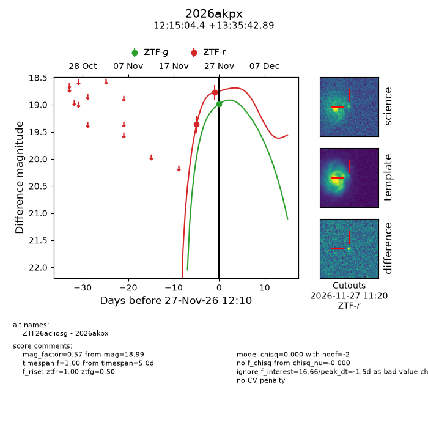
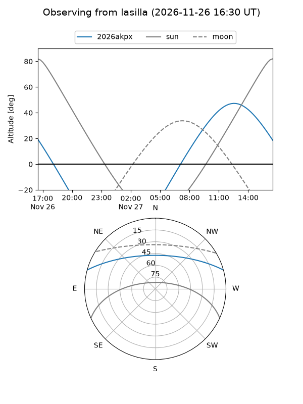
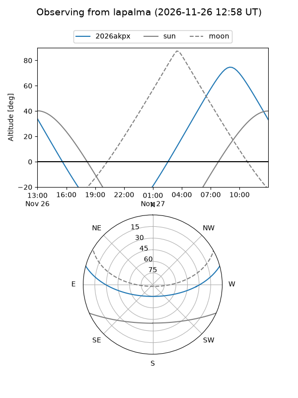
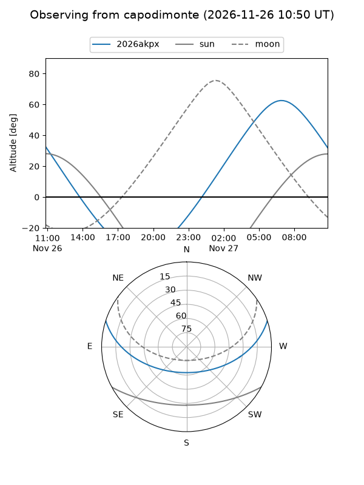
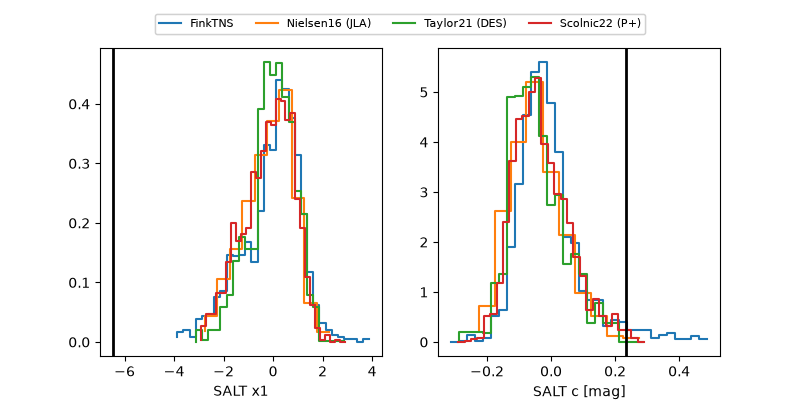

2026akpx
Target 2026akpx at 2026-11-27 12:12
Aliases and brokers:
FINK-ZTF: ztf.fink-portal.org/ZTF26aciiosg
Lasair-ZTF: lasair-ztf.lsst.ac.uk/objects/ZTF26aciiosg
ALeRCE-ZTF: alerce.online/object/ZTF26aciiosg
YSE-PZ: ziggy.ucolick.org/yse/transient_detail/2026akpx
TNS name: wis-tns.org/object/2026akpx
Direct TNS query: direct search
alt names
ZTF26aciiosg (ztf,fink_ztf)
2026akpx (tns,yse)
Coordinates:
equatorial (ra, dec) = 183.7681,+13.59525
equatorial (HMS+DMS) = 12:15:04.35,+13:35:42.89
galactic (l, b) = (269.0185,+74.02216)
Flags:
peak dt: -1.5
Photometry:
last ztfg=18.99, ztfr=18.77
1 ztfg, 2 ztfr detections
Lightcurve

Visibility



Additional plots
